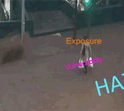

Mattia Amadio, PhD
Disasterologist and climate risk expert
Curriculum Vitae

My academic and work experience has been entirely focused on the modelling of impacts triggered by natural hazards and, consequently, understanding the relationships between climate change and the frequency of extreme events.
Starting from floods phenomena, my work extended to a wider range of natural hazards.
My primary objective has been to develop a spatial-explicit framework for risk assessment which could be flexibly deployed for a variety of case studies involving different hazard types and exposure categories. This led to the release of the CCDR tools, aimed at supporting operational risk screening in developing countries.
Scroll down to see my education and work experiences.
Bachelor and Master Degree
My bachelor degree is Environmental Sciences, a multi-disciplinary three-years degree held at Ca'Foscari University of Venice.
After that, I got a joint-degree master (110/110) in Sustainable Development with a six month period spent at the Department of Geography of Universiteit Utrecht.
My master thesis Looking forward from the past is related to flood damage modelling in reference to an historical flood event, and it was developed during an internship at research center Fondazione Eni Enrico Mattei, where I started my experience as junior researcher on EU FP7 projects related to water security.
Doctoral Degree
From 2015 to 2018 I carried out my PhD in Science and management of Climate Change at the Ca' Foscari University defending a thesis titled Integrated framework for flood risk assessment in Italy. The thesis consists of four papers published on peer-reviewed online journals.
I spent two semester abroad as visiting student:
- one semester at the Integrated Catchment Assessment and Management center (iCAM), Australian National University, under the supervision of Prof. Tony Jakeman;
- one semester at the Institute for Environmental Studies (IVM), Amsterdam Vrije Univeriteit, under the supervision of Prof. Philip Ward.
Work as Consultant
Since 2018 I collaborate with the World Bank's Global Facility for Disaster Reduction and Recovery (GFDRR labs). I am involved in the management and development of the global hazard monitoring tool ThinkHazard! and in the collection and review of risk datasets covering different natural hazards such as floods, landslides, cyclones, earthquakes and tsunamis.

I was involved in the production of hazard and risk analyses for a number of developing countries, for which I built a dedicated risk analysis framework [CCDR-tools].
Research Experience
From 2012 to 2020 I have been part of the Risk Assessment and Adaptation Strategy group lead by Dr. Jaroslav Mysiak at CMCC@Ca' Foscari, Venice. Since then, I contributed to a number of projects:
- SAFERPLACES (Climate-KIC) - Flash-flood hazard from extreme precipitations and risk mitigation in European cities
- SAVEMEDCOAST (ECHO) - Assessment of economic costs linked to sea level rise along the Mediterranean coasts
- CLARA (H2020) - Climate forecast enabled knowledge services
- CHAKE OU (ECHO) - Flood risk mapping in Paraguay
- PNACC (MATTM) - National Climate Change Adaptation Plan for Italy
- COST-ADAPT (Climate-KIC) - Adaptation Service for regional assessment of climate risks in Emilia-Romagna
- ENHANCE (FP7) - Spatial analysis of flood impacts in Europe
- CASCADE (Climate-KIC) - Freshwater assessment and management in Caribbean Windward Islands
- DRR-MAURITIUS (Consultancy) - Risk maps for the Government of Mauritius

Publications
Tools and Expertise
 | |
| |
Flood risk concepts
